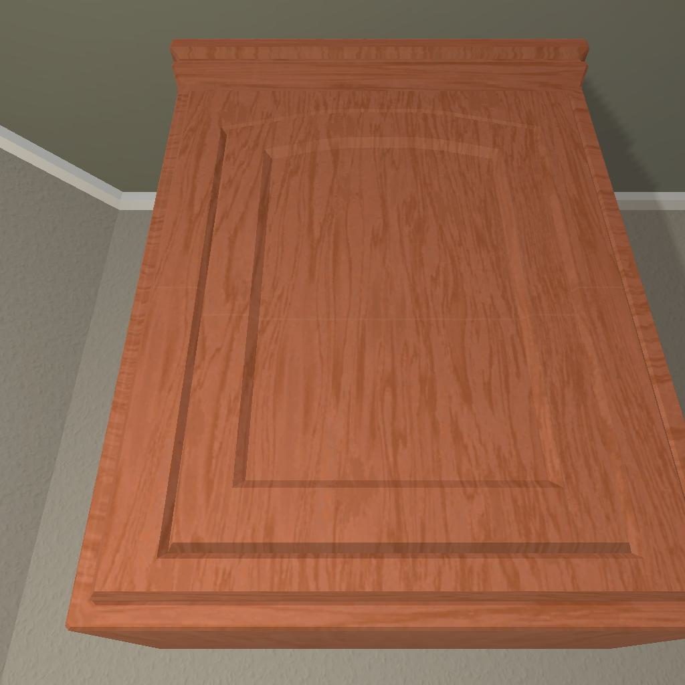

---------------------------------------------------------task: 15---------------------------------------------------------
--------------------------------------------------------------------------------------------------------------------------------------------------------------------
--------------------------------------------------------------------------------------------------------------------------------------------------------------------
Step:--------------------------------------------------------------------------7-------------------------------------------------------------------------------
----------------------------------------
VLM Prompt:
Image1:
Image2:
**Instruction**
1. Analyze the provided images to identify all visible household objects and compare the difference between images (e.h. whether the object is opened or not and taken on hand or not), focusing on those relevant to the task description "cool some mug and put it in coffeemachine."
2. Use the analysis of images and the task hint "The agent must find an object of the desired type, pick it up, go to a fridge, cool the object with the fridge, then find the correct location to place it, and put it down there. The agent does not need to use the fridge button or open the fridge to cool the object, and the agent just needs to do action that is "cool the object with the fridge"." to answer the question: what is the most reasonable action in the choices for the task description "cool some mug and put it in coffeemachine"?
3. Decide and write the answer using the template: The answer is: (i): , where i is the real number. If there is no desired object in images, search every place based on **Initial Observation** to find the object. And if no one is exactly correct, choose a similar answer.
**Initial Observation**
You are in the middle of a room. Looking quickly around you, you can see cabinet (1-15), fridge (1), countertop (1-4), drawer (1-4), microwave (1), toaster (1), coffeemachine (1), garbagecan (1), sink (1), stoveburner (1-3), sinkbasin (1)
**Answer Choices**
(1): go to cabinet 3
(2): go to fridge 1
(3): go to countertop 1
(4): go to cabinet 5
(5): go to cabinet 6
(6): go to cabinet 7
(7): go to drawer 1
(8): go to drawer 2
(9): go to cabinet 8
(10): go to drawer 3
(11): go to cabinet 9
(12): go to cabinet 10
(13): go to drawer 4
(14): go to microwave 1
(15): go to cabinet 11
(16): go to toaster 1
(17): go to cabinet 12
(18): go to cabinet 13
(19): go to cabinet 14
(20): go to cabinet 15
(21): go to countertop 2
(22): go to coffeemachine 1
(23): go to garbagecan 1
(24): go to countertop 3
(25): go to countertop 4
(26): go to sink 1
(27): go to stoveburner 1
(28): go to stoveburner 2
(29): go to stoveburner 3
(30): go to sinkbasin 1
(31): open cabinet 2
(32): close cabinet 2
(33): examine cabinet 2
**Answer**
Let's think step by step by following the instructions.
----------------------------------------
----------------------------------------
Original Response:
First, we analyze the provided images. Both images depict a wooden cabinet, with Image1 showing the cabinet closed and Image2 showing the cabinet open with two doors. There is no mug or any other object visible in either of the images.
Based on the task description, "cool some mug and put it in coffeemachine," and the hint provided, the agent must find a mug, cool it with the fridge, and then place it in the coffee machine. Since there is no mug visible in the images, we must search for it based on the Initial Observation.
Looking at the answer choices, none of them directly mention finding or picking up a mug. However, since mugs are typically stored in cabinets or on countertops, and we need to find one before we can cool it in the fridge, the most reasonable action to start with would be to search the cabinets.
The answer is: (1): go to cabinet 3. If the mug is not there, continue searching the cabinets and countertops as necessary.
----------------------------------------
----------------------------------------
>>> Refine Original VLM Response and Get Pure Action: go to cabinet 3
----------------------------------------
-----------------------------------------------------------------
Running time: 9.343821048736572 seconds
Total Money: 6.994600000000005
-----------------------------------------------------------------
-----------------------------------------------------------------
Text Observation:You arrive at loc 2. The cabinet 3 is closed.
-----------------------------------------------------------------
UNSUCCEED